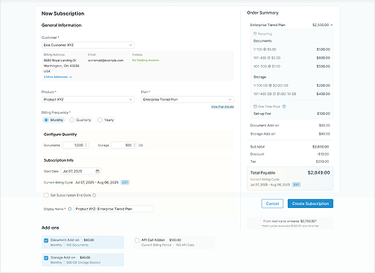
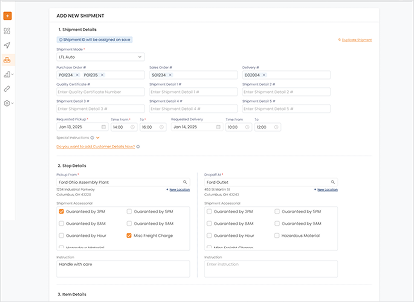
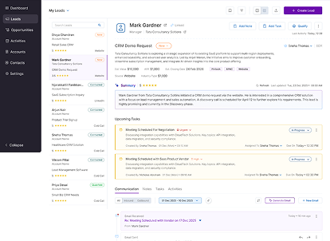
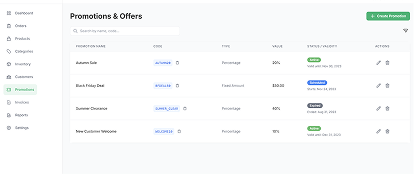

01
Saaslogic — Subscription Workflow Redesign
Simplified a complex subscription setup process by restructuring information and reducing workflow friction for operational users.
Explore Case Study→
Product Designer
Product Designer with 5+ years of experience designing enterprise systems, operational workflows, customer-facing experiences, and AI-assisted products.
I believe good UX is not about removing complexity—it’s about making complexity understandable.
Supriya Kurian
Product Designer · Kochi
Work
A selection of projects focused on workflow optimization, information architecture, and AI-assisted product experiences.
01
Simplified a complex subscription setup process by restructuring information and reducing workflow friction for operational users.
Explore Case Study→
02
Improved workflow continuity and context preservation for logistics teams operating in a high-volume environment.
Explore Case Study→
03
Reorganized information hierarchy and actions to help sales teams access and update critical lead information faster.
Explore Case Study→
04
Explored how AI can support operational workflows while maintaining user control and decision-making.
Explore Case Study→
About
I’m a Product Designer focused on simplifying complex digital products, from B2B SaaS and operational platforms to customer-facing and AI-assisted experiences.
I enjoy improving workflows, information architecture, and interaction patterns so people can complete complex tasks with greater clarity and control.
My work spans workflow optimization, product thinking, AI-assisted interactions, and designing experiences that balance business requirements with user needs.
Expertise
Open to Product Design opportunities focused on creating intuitive, efficient, and user-centered experiences.